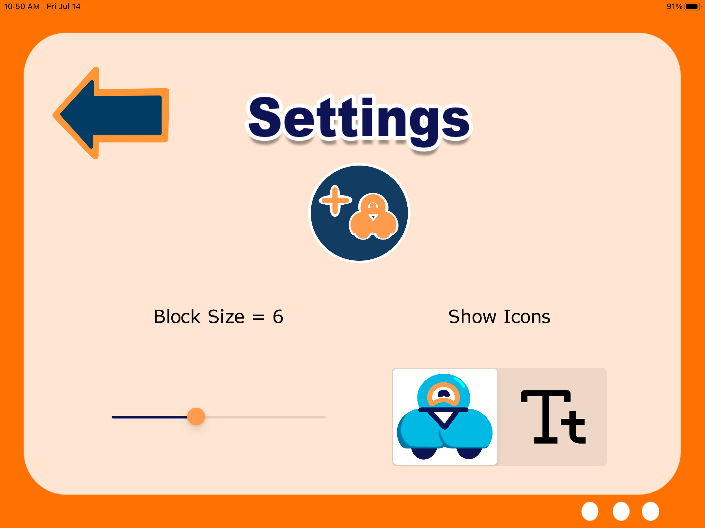

First, turn on your robot by pressing the round power button on her side.
Next, open the Blocks4All app on your iPad.
Select the Settings icon in the bottom right of your screen
This is the Settings menu. You can adjust the block size, and which Icons are showing. For now, select the Add Robot icon in the center of the screen.

A new screen will open with a list of robots. Select your robot’s name (it will appear near the top of the screen). Once she connects, her name will turn green. If you have VoiceOver on, it will say “connected.”
Press the Workspace button in the upper left corner of the screen. This will open up the coding environment where you can send commands to the robot. On the left side of the screen is the toolbox, which contains a menu of all the commands (called blocks) that you can send to the robot. In the center of the screen is the main workspace.
Find the Drive category in the toolbox and select it.
A new toolbox screen will open with your drive options! Select the first block in this screen (it is called Drive Forward).
Once selected, your choice will appear in the toolbox.
Select anywhere in the workspace and the Drive Forward block will be placed at the beginning of your code. You do not need to drag and drop!
Dash is ready to drive! Press the Play button (green triangle) in the bottom right corner of the screen.
2. Driving Backward
Now Dash can show her moves in the middle of the circle! Let’s help her learn how to go back after she’s done. The Drive category in the toolbox should still be open. Find the second block (Drive Backward) and select it.
Where should we put the block in the workspace? Dash reads her instructions left to right, so we have to make sure to put the Drive Backward block after the Drive Forward block. Click anywhere in the workspace to the right of the Drive Forward block to do this.
Select the Play button to make Dash go forward and backward
3. Dash Does the Nod
Now Dash can go in and out of the circle, but she wants to dance while she’s in the middle. Let’s teach her a basic move. Select the Back button in the upper left corner of the screen. This will take you out of the Drive category.
Select the Motion category in the toolbox (Hint: You will have to scroll down to find it).
The selection screen will open. Select the second block (Nod).
Now we have to place this block in the workspace. We want to put it after Dash Drives Forward into the circle and before she Drives Backward out of it. Select the Drive Backward block in the workspace to place Nod before it!
Select Play to make Dash do her dance!
4. The Circle Gets Bigger
Now Dash can do her dance in the circle. But what if the circle gets bigger? She will need to drive a longer distance to get to the center. Did you notice that the Drive Forward and Drive Backward blocks have another block on top of them? These are called modifier blocks and we can use them to help Dash drive farther. Select the modifier block on top of Drive Forward (it says 30 cm, Normal).
A new screen will appear with your options. At the top of the screen is a distance slider. Let’s use it to help Dash drive 50 centimeters.
Increment the distance slider until it reaches its halfway point and says “50”.
Optional: You can also change how fast Dash drives! Select the Faster (plus) and Slower (minus) buttons to make her go the speed you want.
When you’re happy with your choices, press the Back button in the upper left corner of the screen. Now Dash will drive forward 50 centimeters!
Adjust the Drive Backward distance to also be 50 centimeters (Hint: Use the modifier block).
Press play to make Dash dance in the bigger circle!
5. Dash Repeats Her Dance
Dash wants to go into the circle again! Let’s help her do her dance more than once. We can help Dash repeat her dance by using a loop. We can create one by selecting the Control category in the toolbox.
Select the first block in this category (Repeat) and place it anywhere in the workspace.
In the workspace, Repeat has two blocks that are next to each other (you may have to scroll left or right to find both). The one on the left is Repeat and the one on the right is End Repeat. We can put the commands we want to repeat in between these two blocks (inside the loop).
Since we want Dash to repeat her whole dance, we will have to move all three other blocks into the Repeat loop. We can start with Drive Forward. Select Drive Forward in the workspace (you may have to scroll left or right to find it). Make sure to select the bottom block and not the modifier. Once you select it, the block is ready to be moved.
Select End Repeat to put it inside the loop.
Repeat this move for Nod and Drive Backward. Now Dash’s whole dance should be inside Repeat.
Select Play. Dash now does her dance twice!
6. Dash Dances More Than Twice
Dash loves dancing in the circle! Let’s help her repeat her dance as many times as she wants. The Repeat block in the workspace has a modifier block, just like Drive Forward and Drive Backward! We can use this block to change the number of times to repeat. Select the modifier block (the block on top of Repeat that says 2). A new screen will open with your options.
In the center of this screen there are two buttons. You can select the Increase (plus) button to make Dash dance more times.
You can also select the Decrease (minus) button to make Dash dance fewer times. She has to do at least two repeats though!
Use the two buttons to make Dash dance as many times as you want. When you’re happy with your choices, press the Back button in the upper left corner to return to the workspace.
Select Play to have Dash dance as many times as you told her to!
When you finish, give yourself (and Dash), a high five and head over to the Hour of Code Website to access your completion certificate!
Bonus
Dash wants to learn some other moves to show off in the circle. Can you help her out?
Give Dash some cool dance moves to do inside the circle (besides Nod)! Here are some ideas to get you started:
Dash changes her lights! (Hint: Check out the Lights category in the toolbox. You can select different colors/options with the modifier block.)
Dash moves her head different directions! (Hint: Check out the Look category)
Dash sings! (Hint: Check out the Sounds category. You can change the noises with the modifier block.)
Place your new moves in the workspace before Drive Backward.
Select Play so that Dash shows off her new dance!
8. Adding Functions
Take a look at the new dance you created. It probably takes several blocks to get Dash to do everything you want. Wouldn’t it be nice if you could tell her how to dance with just one block? You can do that by defining a function, which bundles up a set of instructions to complete a single task. Let’s build a dance function! Select the Functions category in the toolbox (you will have to scroll to the bottom).
Select the block that appears in this category. It is called Create/Edit Functions.
A new screen will open. This is the functions menu. Select Add Function in the upper right corner of the screen.
A pop-up will appear that asks you to type in your function’s name. You can call it “dance” or another creative name that you choose! When you’re done naming your function, press the Done button in the center of the screen.
A new row of buttons will appear near the top of your screen. Select the button that has the same name as your function.
A new screen will appear. This is called the function workspace and it works almost the same way as the main workspace. The one different thing about the function workspace is that it already has two blocks in it. Check out the Function Start and Function End blocks in the workspace. You will have to place all your dance blocks between these two blocks so that Dash knows that they are part of the function.
Select the first block for Dash’s dance in the center of the circle. Don’t include Drive Forward or Drive Backward (they’re not part of her dance). Hint: You can select blocks from the toolbox on the left, just like in the main workspace.
Place the block in the workspace between the two Function blocks (Hint: You can do this by selecting the Function End block.)
Repeat until you have all of Dash’s dance blocks inside the function.
You can run your function using the Play button in the lower right corner of the screen to make sure it works correctly.
When you’re happy with your function, select the Main Workspace button at the top of the screen in the center. This will take you back to the main workspace.
We’re almost ready to use your function! First we have to delete the old dance blocks between Drive Forward and Drive Backward in the workspace. To delete a block, first select it in the workspace.
A Trash button will appear in the lower right corner of the screen, where the Play button used to be. Select this button.
Now your block is deleted! Do this for all the other blocks between Drive Forward and Drive Backward.
Now you’re ready to put in your function! Select the Functions category in the toolbox.
Below the Create/Edit Functions block is a block with your function’s name on it! Select this block.
Place your function in the workspace where Dash’s dance should go (Hint: Put it between the Drive blocks).
Select Play. Dash can now read all the instructions for her dance from your one Function block!
When you finish, give yourself (and Dash), a high five and head over to the Hour of Code Website to access your completion certificate!